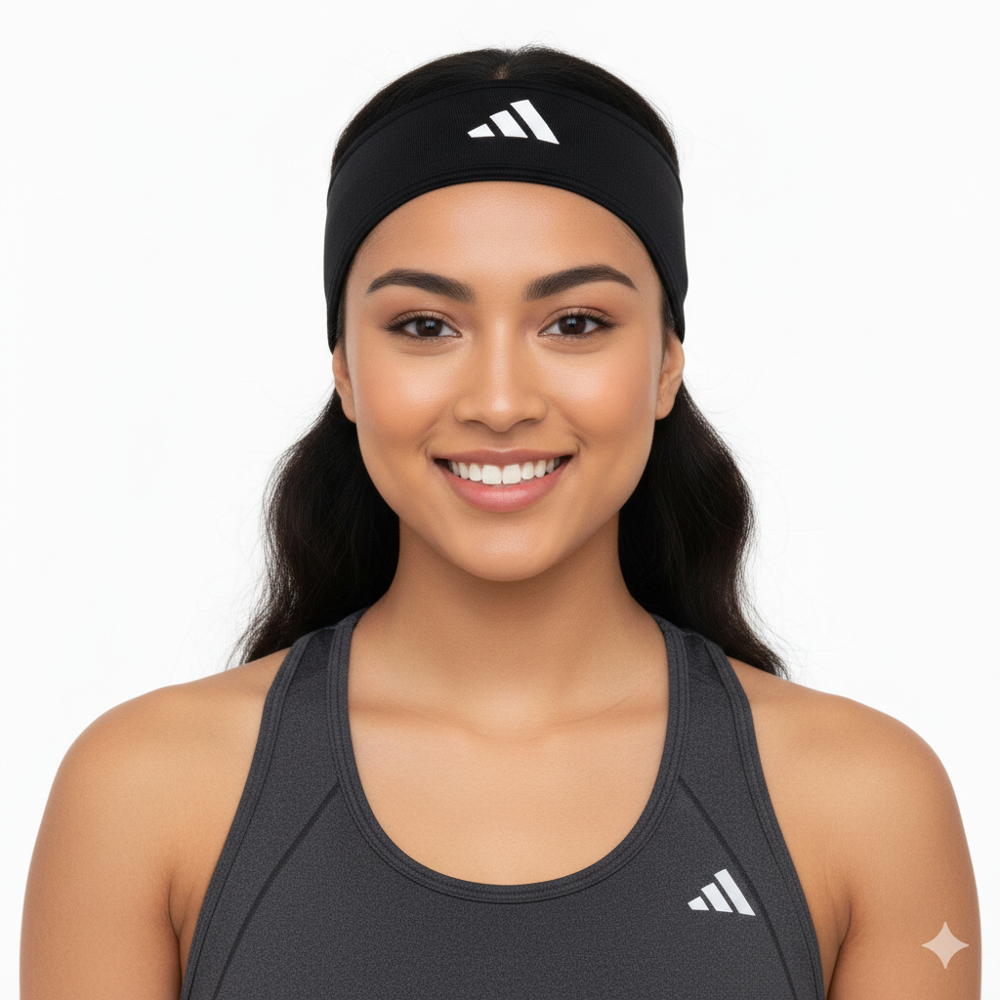
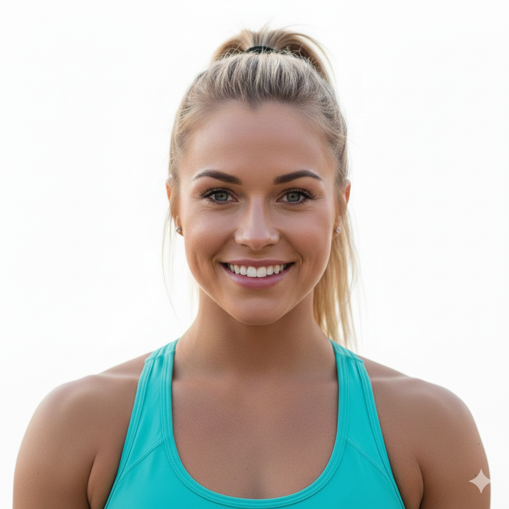

What Our Members say
Real progress. Honest Feedback.

Alisha Rai
★★★★★
"I used to jump between workouts and never felt consistent. At FITNIX, the training finally made sense. Everything is structured, the progression is clear, and I don’t feel overwhelmed anymore. I’ve gained strength, improved my form, and actually look forward to my sessions now."
Annie Sayaka
★★★★★
“What stood out for me was how personalized everything felt. The trainers don’t rush you or push you blindly. They adjust workouts based on how you’re progressing, which made a huge difference in my confidence and performance. This is the most consistent I’ve ever been with fitness.”

Olivia Rose
★★★★★
“I’ve trained at multiple gyms, but FITNIX feels more intentional. There’s no pressure to keep up with others, no ego lifting, and no confusion. The guidance is clear, supportive, and focused on long-term results. I feel stronger both physically and mentally.”
Damilola Adegbite
★★★★★
“FITNIX helped me build a routine I can actually stick to. The focus on form, recovery, and gradual progress made training feel sustainable instead of exhausting. I’ve seen steady improvement without feeling burnt out, which is something I never experienced before.”